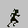
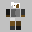
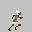
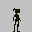
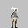
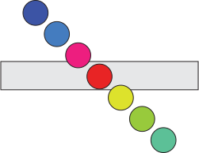
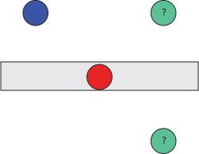
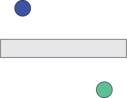
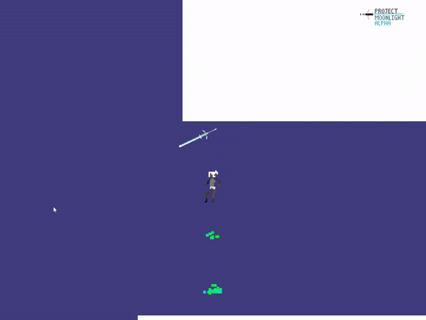

The Moonlight Tongue is a puzzle-platformer in which you play a pacifist monk carrying a supernatural sword up a mountain to achieve peace both for yourself and the lands below.
As a die-hard fan of Ursula K Le Guin, I’m something of a fan of nonviolent narratives; I especially like stories about characters grappling with their violent pasts and learning to work within and even appreciate the confines that a pacifist approach entails. I think that too many narratives fall back on bloodshed as a consequence of (or solution to) conflict when, as Patrick Rothfuss keenly notes, there are many fates worse than death. The only problem is this: I’ve already implemented a number of features into this game which seem to lean towards a violent combat system. In a game where the central tool is a claymore, how do you craft engaging and satisfying mechanics that don’t involve using it as a weapon? If your only tool is a sword, what is every problem but something to cut down?
The answer, as I’ve found it, is to blunt the blade. If your only tool is impotent for its intended purpose, how can you still wield it to achieve your goal?
How do you use a blunt blade to surmount obstacles? Well, you literally use it to surmount obstacles.
Instead of using your blade as a weapon, you use it to augment your maneuverability and puzzle-solving skills: it can serve as a barricade when thrust into the ground or as a platform when thrust into a wall; it can hold down buttons, hold open doors, or hold objects in place; and most importantly it can serve as a paperweight for our protagonist, a pacifist monk on a journey to place this supernatural blade atop a mountain where it will remain out of reach of those who would use it for the very purpose for which it was forged.
THE ENGINE
Because I’m an absolute nerd, I’m not content with using Unity or Godot or Unreal or anything like that to create this game. Instead, I decided to craft it from the ground up in C++, only resorting to OpenGL and FreeType for graphics and text rendering respectively. So far, I’ve successfully implemented an animation system, a continuous collision algorithm, some basic physics, a (crude) entity-component-system architecture 1, gamepad support and mappable inputs, and a sort of color lookup system for sprites and animations that allows me to swap out the colors used for individual frames (or sprites) so that I can make small changes to animations on the fly without having to create entirely separate spritesheets (since I am only a one-man team). I’ll talk about each of these in a little more depth as we go, but it’ll suffice for now to say that I’ve made some good progress on a number of the underlying systems that will underpin the more unique gameplay mechanics I hope to develop.
This is, admittedly, the first large C++ project I’ve ever worked on, so this has also been quite the learning process. I have come to really like the language in many respects; it feels more hands-on than other languages I’ve used for game development (mostly C# and Python, though I’ve done a little Javascript). I don’t doubt that my code would make any competent C++ programmer faint, but it works and it seems to run well.2 I generally try to survey the accepted methods for doing certain things—like collision algorithms—before implementing one myself so that I don’t fall into any obvious traps that those much more intelligent than me have already solved. This usually only extends to technically complicated things—continuous collisions among them—since there are usually certain optimizations I wouldn’t be aware of otherwise. Things like animations I’ve found are rather easy to cook up a solution for without too much research beforehand, usually when the math is minimal or fairly intuitive. I’ve not run into any problem nearly as “fun” as the spherical hex grid problem I ran into when coding Selkie Road, an otherwise unfinished project which involved tiling a sphere with hexes in a performant way. That’s a problem for another post, perhaps when I get around to rebuilding that project in C++, once I’ve finished this one. In any case, we should talk about something more tangible—the systems I’ve added to the game thus far.
Recently, I set about adding a map system to the rendering component of the game, but before I talk about the complications that arose from this I’ll have to explain how it works in theory. The usual way the renderer works is like this: the game hands OpenGL a list of its active textures and the vertices that form the corners of each sprite (picture, frame, whatever) as well as some information about those vertices (position, color, etc). Wrapped in with this extra information is the index of the texture we want to apply from the list of active textures we passed in; furthermore, we send the coordinates on the texture that we want OpenGL to look at when drawing it. To clarify, if I have a picture of a fish (fish.png), it might sit at the fifth spot in my list of active textures. If I want to draw that image, I send OpenGL a single quad and tell it to use the texture at index 4 (since the first element of the list is at index 0, as is common in programming). This quad is actually made up of two triangles with three vertices, so we’ll focus on the top-right vertex for now; we tell OpenGL that this top-right vertex is going to have a texture coordinate of (1.0, 1.0); this coordinate system treats 0.0 as the leftmost side of the texture and 1.0 as the rightmost (the same goes for bottom-to-top). Then, when OpenGL is drawing the quad, it looks at the fifth spot in its list; checks the coordinates, (1.0, 1.0); and draws whatever pixel it finds there to the specific spot on screen. It’s a little more complicated than that, but this will suffice for now.
In theory, all our mapping system does is insert one new layer into this. If the regular method takes a set of coordinates and looks at that spot on a given texture, then the mapping method takes a set of coordinates, looks at that spot on a given texture, then uses the red and green values of the color found there as coordinates on the map, where it looks for the actual color of the pixel we want to draw. Let’s use the central sword of The Moonlight Tongue as an example.
Our texture png would look something like this:
If we take the rightmost tip of the blade, the rgba values are (63, 31, 0, 255). Isolating the r and g values, we get the coordinates (63, 31), which points us to a particular pixel on the map:
Sampling the pixel at the coordinates (63, 31) yields the rgba values (212, 253, 255, 255) which is precisely the color we draw to the screen for that particular pixel. This occurs for all the pixels in the texture, and we extend this to animations as well. For example, the raw animation for a test version of our protagonist’s running looks like this:

The map looks something like this:

And via the mapping process we described above, we get something like this:

I’ve added the grey background so that you can see her hair, but obviously this would usually be transparent. The same map is used for her other animations; for example, her idle animation:

And, mapped, this becomes:

One of the issues I anticipated in implementing this was the situation in which a texture and its map are placed into separate batches, though first I suppose I should explain what a batch is. Gpus are limited in the number of textures they can have activated at any given time; a non-mapping method for texture rendering would be able to load as many textures as the gpu can handle, draw their respective quads, then move on to the next set of textures, so on and so on until you render all the quads you want on that frame. However, since mapping requires multiple textures to be activated for any given quad, you might run into the situation where the current batch is one texture away from the upper limit and you add a quad with a unique texture and map. The system, unless told otherwise, would place the former in the preceding batch, draw the quads, then move on to the next batch with the map in the first position of the newly-cleared active texture list.
Let’s say, for illustrative purposes, that our maximum number of textures per batch is four. We draw one quad which requires one texture and one map, so we have to activate these. Then, we draw another texture with that same map. However, on this same frame, we want to draw a completely different texture with its own map. Naively, we just add these textures in and tell the renderer that this new quad has a texture index of 3 and a map index of 4. But remember, 4 is really the fifth place on the list of active textures, so when the renderer goes to grab that fifth texture it freaks out; there can’t be five textures activated; this particular gpu can’t handle that. On gpus with this maximum texture limit, the program would crash or simply not render properly. On systems with higher texture limits, it’d work fine, but if we ever tried to load a ton of textures at once, there’s a good chance at least some of them would trigger this bug. Because we’re still early in this game’s development, we don’t currently load enough textures for this to be a problem, but I wanted to preemptively fix this while it would be easy to do so.
I simply went ahead and implemented a system which determines how close the current batch is to full, whether or not any new textures and maps can fit; if not, it closes off the current batch and starts a new one. This really is rather simple, and though I suspect there are a few things I need to iron out with it before I get too much further, it’ll do the trick for now.
CONTINUOUS COLLISIONS
For the longest time, The Moonlight Tongue used discrete collisions because I naively figured it wouldn’t need anything fancier.
I learned otherwise.
For those unaware, collision detection algorithms determine whether or not two physical objects should “collide” (as in, strike one another, as you would expect real life objects to) and there are essentially two kinds: discrete and continuous. The former checks for collisions each frame and moves any overlapping objects so that they are no longer in contact. It may optionally apply velocity inverse to the vector of collision, in order to ensure that on the next frame the two objects don’t just re-collide; in fact, this is precisely the method I used for a while. We’ll explain the latter later. Some of my explanations might be hard to picture, so we’ll whip up some example images:

Let’s take this to be a representation of a ball moving at a set velocity with no other forces acting upon it; each ball after the first represents where the ball will be after set intervals of time: blue at zero, red at three, blue-green at six. Let’s say that our game runs at sixty frames-per-second, so that the ball moves from the blue position to the blue-green in only a tenth of a second. With discrete collision, the game would register a collision and resolve it; in other words, collision would occur as expected. We might expect the ball to bounce, yielding something like this:
However, if the frame-rate were to change, let’s say halving, we would see the ball immediately collide with the platform. Then, it’d look something like this:
You can probably tell where this is going. If our fps were to fall to 20, we could cut out two of every three balls, resulting in this conundrum:

We could probably tell the system to take into account the current velocity of the object and determine that the ball should bounce up rather than passing through, but this adds a bit of complexity to our algorithm that could easily host bugs or unintended behavior. It also doesn’t fundamentally deal with the problem at hand; instead, it kicks the can. If we imagine the frame rate falling further or the object moving faster, we could easily see a situation in which the ball appears to jump from the initial blue position on frame one to the blue-green position on frame two:

Because the ball never ends up in-collision with the platform at the end of a frame, the collision is never registered and—as far as the game is concerned—never occurs at all. I naively thought that none of my objects would ever move fast enough for this to be a problem, but as I got coding, I slowly edged closer and closer to a fast-moving, dynamic player controller that really didn’t like to play nicely with my discrete collision algorithm.
One of the first problems I ran into was an edge-case: quite literally, the way we calculated collisions was by checking the edges of one quad against the diagonals of another. However, when the player stood on the corner of a platform, they would drop into the platform between frames due to gravity pulling them down, that collision would be detected, and they would be moved along the platform’s diagonal in order to resolve the collision. This meant that at the corner of platforms, the player would magically teleport off the edge or jitter uncontrollably—neither of which we particularly wanted to occur.
Thinking that continuous collisions would be too complicated to add, I instead calculated the up-vector for each platform and used this to offset the player in these particular situations, meaning the player would always be moved “up” relative to the platform’s rotation. Great, they could now stand on corners. But what if they hit the corner coming from the side? Well, the vector for their displacement would be calculated with that up-direction in mind and—yeah, they would be moved up onto the platform even if they should’ve hit it and slid down. I can remedy this, I thought: I’ll just check to see if the player’s centerpoint was higher or lower on the relative up-axis of the platform and if they’re lower I’ll have them move down; otherwise, they’ll move up. And it was perhaps somewhere around here that I grit my teeth and decided it’d just be better to do the work and implement a continuous collision algorithm to solve the problems that were quickly piling up.
And it was not nearly as difficult as I expected. I shopped around and ended up deciding on an algorithm that works particularly well for axis-aligned quads (which all of my objects are) and now the game runs better than it did with my discrete collisions, both in the sense that collisions are quite smooth and work as expected, in addition to this algorithm being less computationally expensive and thus running faster than what I naively thought to be the simpler method. I still would like to figure out how to handle rotated objects as that currently is one thing which my discrete system accounted for that my continuous one doesn’t yet allow. But other than that, I’m really quite pleased with how it turned out.
GAMEPLAY
I suppose all that remains to be talked about is the actual gameplay, and admittedly this is one area where I feel particularly lacking. Right now, I’ve focused a whole lot of attention on making movement intuitive and fluid: I’m honestly not a huge fan of games that require precise input; the sort of puzzle games I like to play are those in which, once you’ve discovered the solution to the problem, it is relatively easy to perform the necessary inputs to complete it. In other words, I don’t want players to know how to solve a puzzle but be unable to achieve the level of dexterity or precision or whatnot necessary to do so. I may vacillate on this in the future; I suspect there is a sweet spot somewhere between mechanical and mental skill where the player gets the sensation of revelation upon solving the puzzle as well as the satisfaction of mechanically mastering the movement, but right now I’m perhaps over-emphasizing the former.

This little action of throwing the blade into the wall, jumping on it, then using it to access somewhere you couldn’t earlier is one of the core mechanics of the game. As you can see, the hilt of the blade becomes corporeal when it is at the correct angle; this also occurs when it is thrust straight (enough) down into the ground, where it can act as a sort of barricade.3 I intend each level to be particularly vertical, requiring the player to make use of this tool to climb and solve puzzles.4
In terms of maneuverability, the player is able to run, crouch, crouch-walk, slide, jump, double jump, run up walls, slide down them, and jump off them. I decided upon a relatively high maximum speed early on in development because that simply felt the most fun to move around with. No other important modes of movement jump out at me right now—no pun intended—so I think we’ve polished that enough for now. The next big decision as I see it is the form of conflict we want to focus on: I know I talked about having the game be nonviolent earlier, but I’ve had some time to think about that a little more in-depth and it has gotten me on a particular line of thought that I’d like to explore more here.
Can you make a game about nonviolence that doesn’t allow violence? I mean, the obvious answer seems to be yes, just imagine a game in which you smuggle pamphlets to circumvent a censor or help political prisoners escape detainment; you could obviously disallow violence in these and still have a meaningful message, but part of me also feels like there’s a bit of a quandary: if you disallow violence or allow violence but punish the player for it, the game can feel like it is lecturing the player, like it isn’t entering into a discourse but instead demanding a particular worldview. Thus, it might be that the most game most persuasive in favor of a nonviolence would be one in which violence is the easiest solution to a problem, not overtly punished, perhaps even rewarded—precisely because, in our world, violence or at least unempathetic solutions are often the simplest, appealing to our instincts, and (often) rewarded by our socio-economic systems.
I suppose this requires some explanation and / or elaboration, and it should be fairly obvious that I’m coming at this from a particular, to-some-degree subjective point-of-view. It shouldn’t be too difficult to persuade you that autocracy, an inherently violent form of government, is simpler than democracy: the hierarchy of power is straightforward, it is easy to know where you stand, easier to know who can leverage greater violence against another, while democracy is riddled with all sorts of ambiguity. Similarly, compromise between international actors is notoriously difficult to attain; much easier is the domination of a single actor over the others by virtue of its greater potential for violence. We feel it is “fair” when people suffer due to perceived mistakes or wrongdoings—addiction, mental illness, criminal behavior—because we mistakenly believe that the world is just, that people occupy their station because of some inherent moral value. It is simpler to believe that people deserve what they receive than to accept that much of the world is entirely arbitrary. Conquest is simpler than compromise. Competition is simpler than cooperation. This is simple: the strong take and the weak suffer what they must. Now, this is meant to be a devlog not a philosophy essay, so I’ll add that I’m not trying to say that simplicity is evil; all models of the world, all worldviews, all ideologies are necessarily simpler than reality because as humans we are not equipped to comprehend the full complexity of the real world. What I am trying to say is that games lend themselves to violence because violence is, most of the time, simple, and any game about nonviolence must cope with this. We can’t reject it. We can’t make violence harder, more complex, because then it won’t reflect what the player understands about reality. We have to persuade the player to consciously choose nonviolence over violence even though the latter might be easier, more immediately rewarding, and more in-line with their experience with other games—and I can really see few ways of achieving this other than appealing to their empathy. In effect, we must write well.
Players are really good at distancing themselves from poorly written and / or poorly coded npcs. Really, how many Skyrim npcs lie dead because they repeated the same canned phrase too many times to the player? But if you offered players of Disco Elysium a gun and told them to kill their companion, Kim Kitsuragi, they would sooner shoot themselves. No, I don’t doubt that some of them would do so, but hopefully my point is clear: I think one of the best ways to persuade players to choose a nonviolent approach is not to take away the ability to commit violence or punish those who choose it—this would feel too preachy—but instead to humanize one’s opponents, to put some faith in the player’s empathy.
This approach would fit a narrative-driven game with quite a bit of dialogue best, perhaps one in which you choose from dialogue options in the vein of Disco Elysium or Planescape: Torment. If we want to meld this with our puzzle-platformer elements, we’d arrive at a game where you solve puzzles and maneuver your way up towards some goal with narrative sections interspersed, perhaps interwoven. This would also give me the opportunity to exercise my writing skills—really, at heart, I remain a writer—so I’m inclined to follow this path and see where it leads.
This wraps up everything I’ve wanted to talk about here. This serves hopefully as a sort of catch-up devlog; I hadn’t written anything for the first phase of development mostly because I felt I didn’t have anything substantial to say, but now my thoughts have accreted enough that I felt comfortable throwing them on here. I’ll continue to develop The Moonlight Tongue in my free time, adding new devlogs whenever I feel I have more to add, and I hope you enjoy!
May our lord and savior, Jonathan Blow, forgive me for my sins.↩︎
I’ve tested it on Ubuntu and Windows—on newer, aging, and old hardware—and it runs with respectable fps on all these systems thus far. I’d like to test it on more Linux distros soon and on more gpus since I have only really gotten the chance to try it on Intel integrated graphics and three Nvidia gpus (the oldest being from 2010).↩︎
I’d originally had the sword always have an opaque hilt, but it was difficult to know if you’d lodged the blade in at the proper angle (since the platform is only created between certain angles). If you were too far off, you would just pass right through, so I made the sword remain semi-translucent and wholly ethereal when its collider is not active and semi-corporeal and tangible when it is. Now, the player can be sure when they’ll be able to land on the sword and when they’ll pass right through.↩︎
I recently made it so that the sword is a one-way platform. When you jump up into it from below you’ll pass right through, colliding with it only from the sides and from above.↩︎